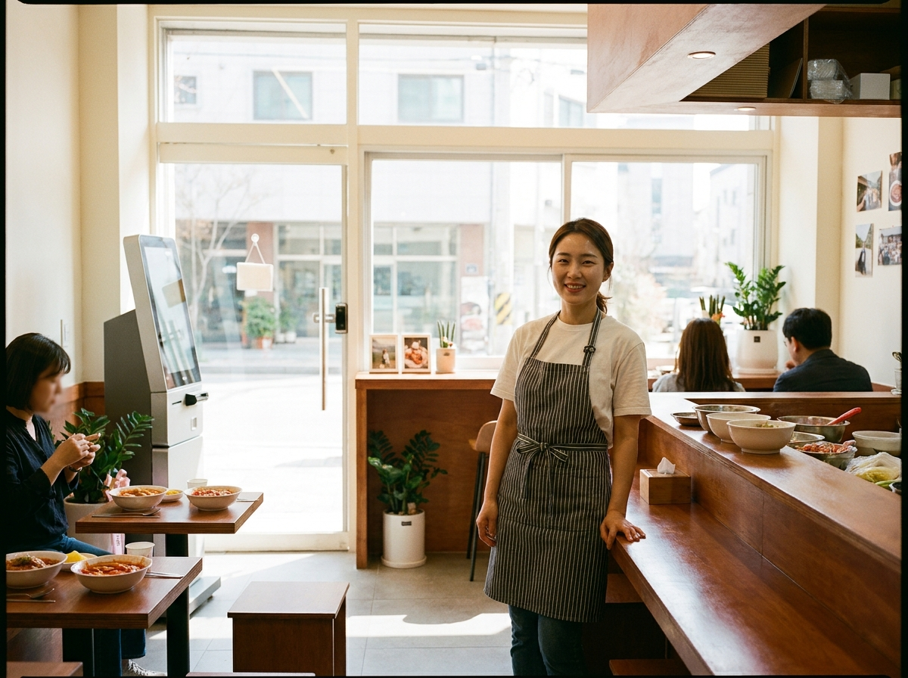
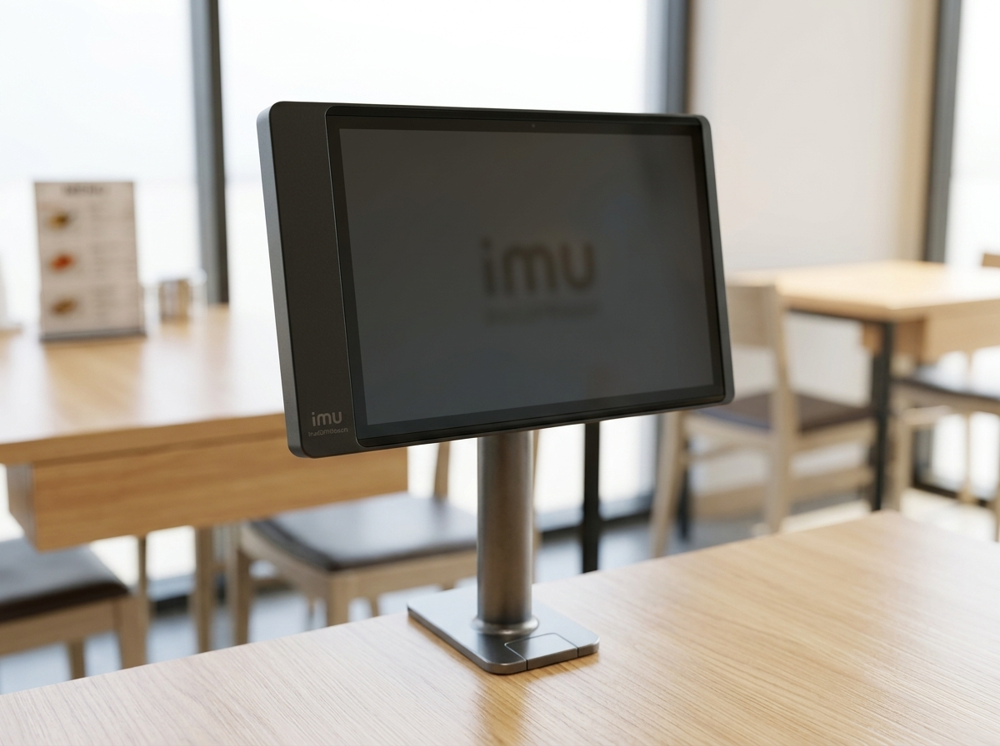
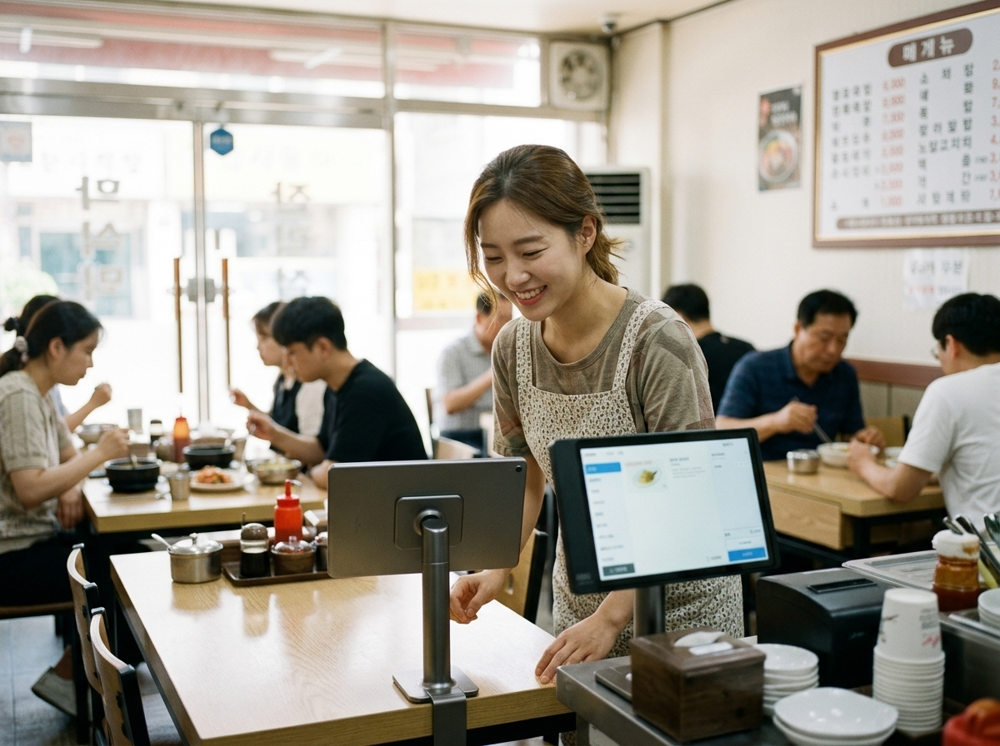

키오스크·테이블오더 정부지원, '스마트상점 기술보급사업'부터 확인하세요
결론부터 말씀드리면, 키오스크나 테이블오더 같은 스마트 기기를 들일 계획이라면 정부의 '스마트상점 기술보급사업'을 먼저 알아보시는 것이 좋습니다. 소상공인의 디지털 전환을 돕기 위해 정부와 지자체가 기기 도입 비용의 일부를 지원하는 사업으로, 조건에 맞으면 자부담을 크게 줄일 수 있습니다. 저희 누리네트웍스는 14년간 수도권 3만여 매장의 결제·주문 환경을 직접 설치·관리해 오면서, 지원사업을 활용해 부담 없이 무인화를 시작한 매장을 여럿 함께해 왔습니다. 다만 지원 금액과 신청 시기, 대상은 해마다 달라지므로, 이 글에서는 큰 그림을 잡는 데 초점을 두고 어디서 정확히 확인해야 하는지까지 정리했습니다.

'스마트상점 기술보급사업'이란 무엇인가요
스마트상점 기술보급사업은 소상공인이 키오스크, 테이블오더, 스마트 미러, 포스 등 디지털 기술을 매장에 도입할 때 그 비용의 일부를 정부·지자체가 지원해 주는 제도입니다. 인건비 부담이 커지고 비대면 주문이 익숙해진 흐름 속에서, 작은 매장도 무인·자동화 기술을 도입할 수 있도록 돕는 것이 목적입니다.
지원 방식은 대체로 '자부담 일부 + 정부지원 일부' 형태로, 사장님이 전체 비용을 다 부담하지 않아도 되도록 설계되어 있습니다. 다만 매년 예산과 세부 조건이 바뀌고, 지역별로 별도 사업이 함께 운영되는 경우도 많습니다. 그래서 '지금 우리 지역에서 열려 있는 사업이 무엇인지'를 확인하는 것이 첫걸음입니다.
신청 전에 반드시 확인해야 할 것들
지원사업은 좋은 기회이지만, 조건을 잘못 이해하면 시간만 쓰고 대상에서 빠질 수 있습니다. 신청 전 아래 항목을 미리 점검해 보시길 권합니다.
| 확인 항목 | 왜 중요한가요 | 어디서 확인 |
|---|---|---|
| 지원 대상 | 업종·사업자 형태에 제한이 있을 수 있음 | 소상공인시장진흥공단·소상공인24 |
| 지원 품목 | 키오스크·테이블오더 등 대상 기기 지정 | 사업 공고문 |
| 자부담 비율 | 실제 내가 낼 금액 파악 | 연도별 공고 |
| 신청 기간 | 예산 소진 시 조기 마감 가능 | 공고 일정 |
| 중복 지원 여부 | 다른 사업과 동시 신청 제한 확인 | 담당 기관 문의 |
무엇보다 지원 금액·자부담 비율·신청 기간은 해마다 달라집니다. 인터넷에 떠도는 지난해 정보나 확인되지 않은 금액을 그대로 믿지 마시고, 반드시 소상공인시장진흥공단(소상공인24, sbiz24.kr)이나 관할 지자체의 최신 공고를 직접 확인하시길 권합니다. 궁금한 점은 담당 기관에 전화로 문의하는 것이 가장 정확합니다.

지원사업을 200% 활용하는 현실적인 순서
지원사업을 잘 활용한 사장님들에게는 공통된 흐름이 있었습니다. 첫째, 우리 매장에 정말 필요한 기기부터 정합니다. 지원이 된다고 무리하게 여러 기기를 한꺼번에 들이기보다, 회전율이 관건인 매장이라면 테이블오더, 대기 줄이 문제라면 키오스크처럼 병목부터 해결하는 편이 만족도가 높았습니다.
둘째, 공고 일정을 미리 챙깁니다. 예산이 정해져 있어 조기 마감되는 경우가 많으므로, 관심 사업이 열리면 서류를 서둘러 준비하는 것이 유리합니다. 셋째, 설치·사후관리가 확실한 업체와 함께합니다. 지원사업으로 기기를 들여도, 도입 후 고장이나 운영 문의에 빠르게 대응해 줄 곳이 없으면 오히려 스트레스가 됩니다. 지원 여부만큼이나 '설치 후를 누가 책임지는가'가 중요합니다.
누리네트웍스는 수도권을 직접 방문해 설치하고 관리하는 결제·주문 단말 전문 업체입니다. 정품 기기와 거품을 뺀 직접 공급가를 원칙으로, 어떤 기기가 우리 매장에 맞는지부터 함께 상담해 드립니다. 지원사업 대상 여부는 담당 기관이 최종 판단하지만, 기기 선택과 매장 상황에 맞는 구성은 저희가 옆에서 도와드릴 수 있습니다. 정확한 비용은 매장 규모와 구성에 따라 달라지므로 상담 시 안내해 드리며, 토스단말기·네이버단말기는 월 0원·약정 없음으로 부담 없이 함께 쓰실 수 있습니다.

자주 묻는 질문(FAQ)
Q. 지원사업에 신청하면 무조건 선정되나요?
아닙니다. 예산과 대상 조건이 정해져 있어 신청한다고 모두 선정되는 것은 아닙니다. 대상 요건을 충족하는지, 서류가 정확한지가 중요하며, 선정 기준은 사업 공고를 따릅니다. 정확한 대상 여부는 소상공인시장진흥공단·관할 지자체에 확인하세요.
Q. 올해 지원 금액은 얼마인가요?
지원 금액과 자부담 비율은 해마다, 지역마다 달라집니다. 특정 금액을 단정해 안내드리기 어려우므로, 소상공인24(sbiz24.kr)나 지자체 공고에서 올해 기준을 직접 확인하시는 것이 정확합니다.
Q. 지원사업 없이 기기를 도입하면 손해인가요?
꼭 그렇지는 않습니다. 사업 일정이 맞지 않거나 대상이 아니어도, 매장 상황에 맞는 합리적인 조건으로 도입하면 충분합니다. 저희가 지원 여부와 별개로 부담을 줄이는 구성을 함께 찾아 드립니다.
우리 매장에 맞는 무인화, 편하게 상담하세요
정부 지원은 좋은 기회이지만, 핵심은 '우리 매장에 정말 맞는 기기를 안정적으로 오래 쓰는 것'입니다. 지원사업 확인부터 기기 선택, 설치와 사후관리까지 누리네트웍스가 함께 고민해 드리겠습니다. 수도권 어디든 직접 방문해 매장을 살펴보고 안내해 드리니, 부담 없이 문의 주세요.
- 📞 전화상담 1544-7754
- 🌐 홈페이지 nwpos.co.kr
- 📷 인스타그램 instagram.com/nurinetworkspos
- ▶️ 유튜브 youtube.com/@nurinetworks


이미지1-매장: 낮 시간, 밝은 분식·떡볶이 매장 입구에 키오스크를 새로 들인 활기찬 장면
이미지2-제품: 매장 카운터에 놓인 테이블오더 태블릿을 가까이서 담은 컷
이미지3-사용: 20대 여성 사장님이 테이블오더로 주문을 확인하며 미소 짓는 순간